Tác giả: Hoàng Đức Anh | 2018-07-31
Khi mới bắt đầu làm việc với GGPLOT2, sẽ rất khó để có thể tùy chỉnh các thành phần cơ bản trong biểu đồ. Trong bài viết này, Ranalytics sẽ hướng dẫn các bạn tùy chỉnh những thành phần cơ bản nhất của biểu đồ với GGPLOT2.
Khi đã tạo được các biểu đồ cơ bản, ta còn cần phải làm chủ được các thành phần khác của biểu đồ, trong đó quan trọng nhất gồm có:
- Tên biểu đồ
- Trên các trục tọa độ (x, y)
- Nội dung phần chú giải
- Phần text trong từng trục
Để thay đổi các thành phần này, ta dùng hàm theme để tạo layer theme mới cho biểu đồ đã tạo. Các thành phần tương ứng của hàm theme là:
- Tên biểu đồ:
plot.title - Trên các trục tọa độ (x, y):
axis.title.x,axis.title.y - Nội dung phần text trong từng trục:
axis.text.x,axis.text.y - Phần chú giải:
legend.title,legend.text
Dữ liệu sử dụng vẽ biểu đồ
library(dplyr)
library(ggplot2)
data <- diamonds %>% sample_n(5000)
data %>% summary## carat cut color clarity depth
## Min. :0.2100 Fair : 151 D: 622 SI1 :1187 Min. :51.00
## 1st Qu.:0.3900 Good : 462 E: 894 VS2 :1130 1st Qu.:61.10
## Median :0.7000 Very Good:1087 F: 874 SI2 : 863 Median :61.90
## Mean :0.7891 Premium :1267 G:1067 VS1 : 783 Mean :61.79
## 3rd Qu.:1.0300 Ideal :2033 H: 778 VVS2 : 463 3rd Qu.:62.50
## Max. :3.0500 I: 489 VVS1 : 334 Max. :79.00
## J: 276 (Other): 240
## table price x y
## Min. :51.0 Min. : 326 Min. :0.000 Min. :0.000
## 1st Qu.:56.0 1st Qu.: 931 1st Qu.:4.678 1st Qu.:4.690
## Median :57.0 Median : 2290 Median :5.660 Median :5.660
## Mean :57.4 Mean : 3869 Mean :5.705 Mean :5.707
## 3rd Qu.:59.0 3rd Qu.: 5205 3rd Qu.:6.522 3rd Qu.:6.520
## Max. :73.0 Max. :18818 Max. :9.540 Max. :9.380
##
## z
## Min. :0.000
## 1st Qu.:2.880
## Median :3.500
## Mean :3.524
## 3rd Qu.:4.030
## Max. :5.770
## Tạo biểu đồ gốc
#Tạo theme
theme_set(theme_minimal())
p <- ggplot(data, aes(x=carat, y = price)) +
geom_point(aes(col=cut))
p#Bước 2: Tạo thêm "layer" cho phép tùy chỉnh các thành phần trong biểu đồ
#Sử dụng layer "theme" để tùy chỉnh
#Bước 2.1: Tạo biểu đồ có title & subtitle
p1 <- p +
labs(title = "Diamonds - price vs. carat")
p1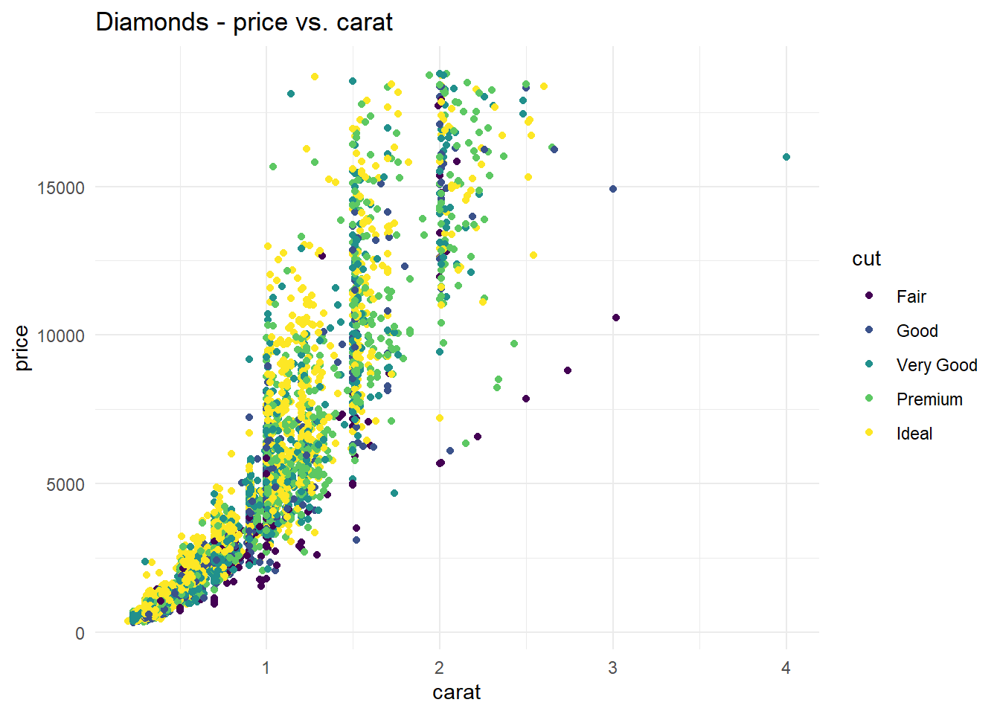
Thay đổi title của biểu đồ với hàm “theme”
- Trường hợp 1: Cho to cỡ chữ và làm tên biểu đồ dạng “bold”
p1 +
theme(plot.title = element_text(size = 15, face = "bold"))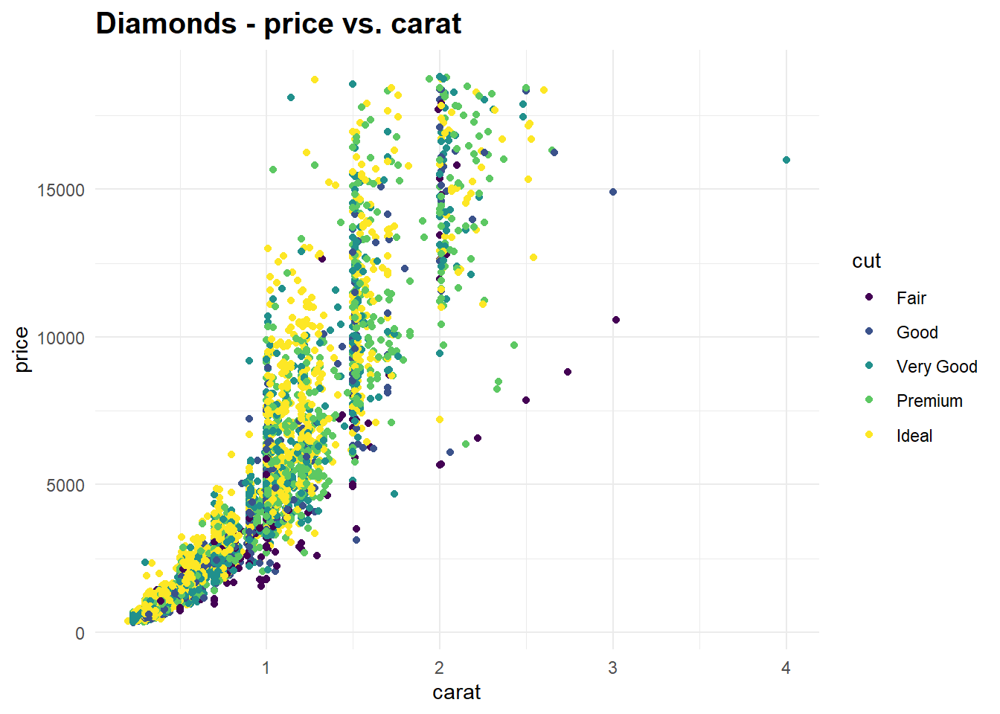
- Trường hợp 2: Thay đổi font chữ cho tên biểu đồ
#library(extrafont)
p1 +
theme(plot.title = element_text(size = 20,
face = "bold",
family = "serif"))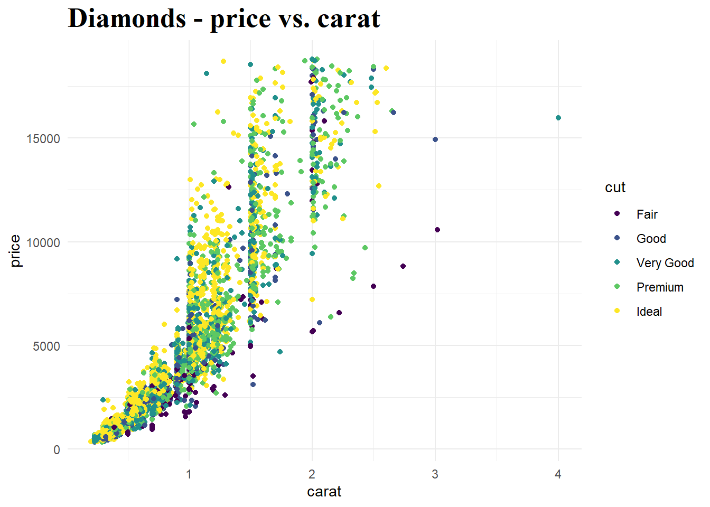
- Trường hợp 3: Xuống dòng cho tên trong biểu đồ
p +
ggtitle("Diamonds \nprice vs. carat") +
theme(plot.title = element_text(size = 20,
face = "bold",
family = "serif"))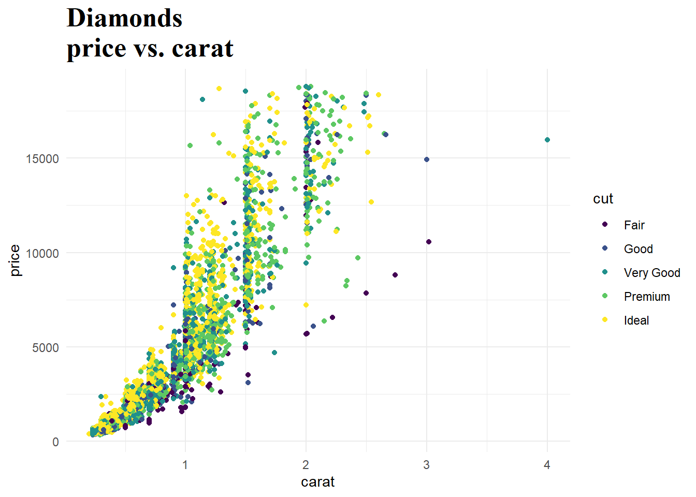
Tùy chỉnh tiêu đề trên từng trục biểu đồ
- Trường hợp 1: Thay đổi cỡ chữ, làm đậm chữ của tiêu đề trục x
p +
theme(axis.title.x = element_text(size = 11,
face = "bold"))- Trường hợp 2: Thay đổi font chữ của trục x
p +
theme(axis.title.x = element_text(family = "serif",
face = "bold"))- Trường hợp 3: Thay đổi kích cỡ, font chữ ở cả 2 trục
p +
theme(axis.title = element_text(family = "serif",
face = "bold"))Tùy chỉnh thành phần text trên từng trục biểu đồ
- Trường hợp 1: Thay đổi kích thước, làm đậm chữ trên trục
p +
theme(axis.text.x = element_text(size = 13, face = "italic"))- Trường hợp 2: Làm nghiêng chữ trên trục
p +
theme(axis.text.x = element_text(size = 13, angle = 45))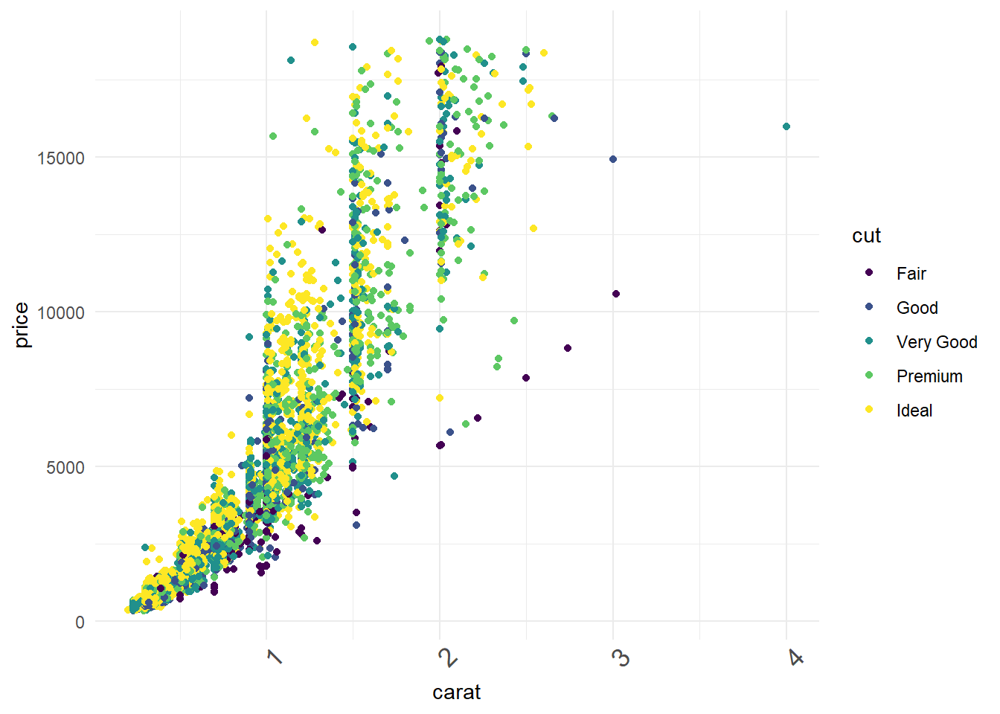
- Trường hơp 3: Thay đổi cả 2 trục
p +
theme(axis.text = element_text(size = 13, angle = 45))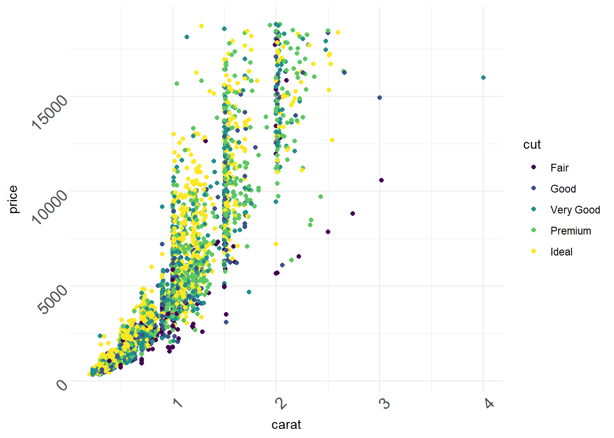
Tùy chỉnh phần chú giải của biểu đồ
- Trường hợp 1: Xóa toàn bộ legend
p + theme(legend.position = "none")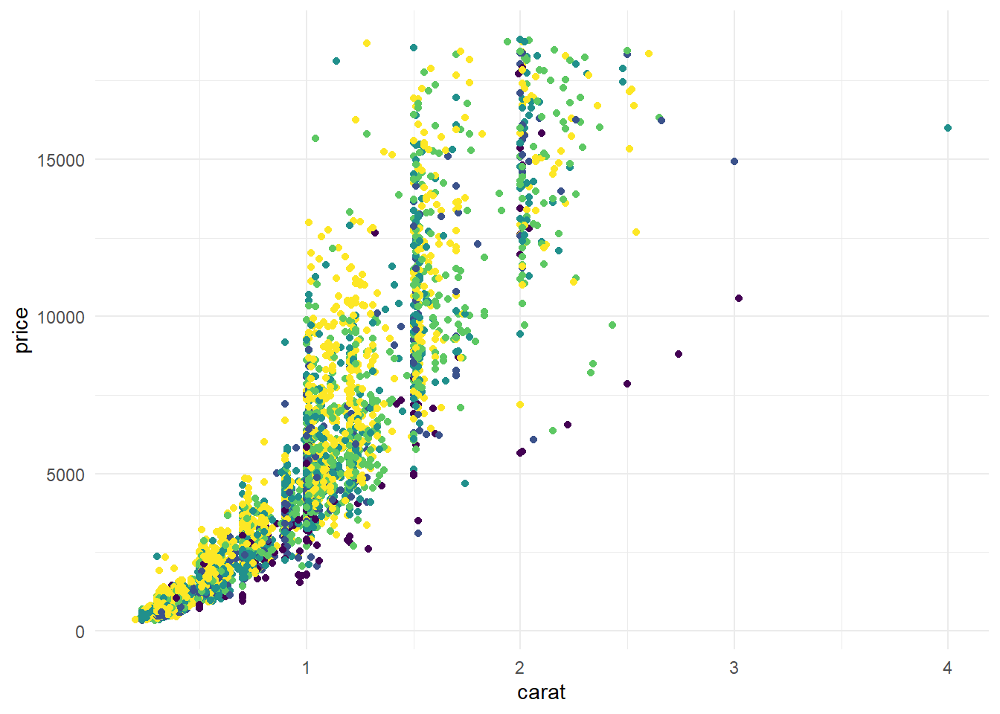
- Trường hợp 2: Xóa tiêu đề của legend
p + theme(legend.title = element_blank())- Trường hợp 3: Thay đổi kích thước, màu sắc của tên legend
p +
theme(legend.title = element_text(size = 14,
face = "bold",
color = "red"))- Trường hợp 4: Thay đổi tên trong legend
p + scale_colour_discrete(name = "Type of diamonds")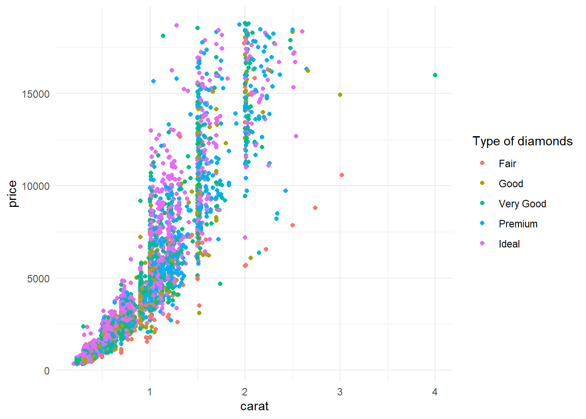
- Trường hợp 5: Thay đổi kích cỡ chữ trong phần legend
p +
theme(legend.text = element_text(size =12,
face = "bold",
family = "serif"))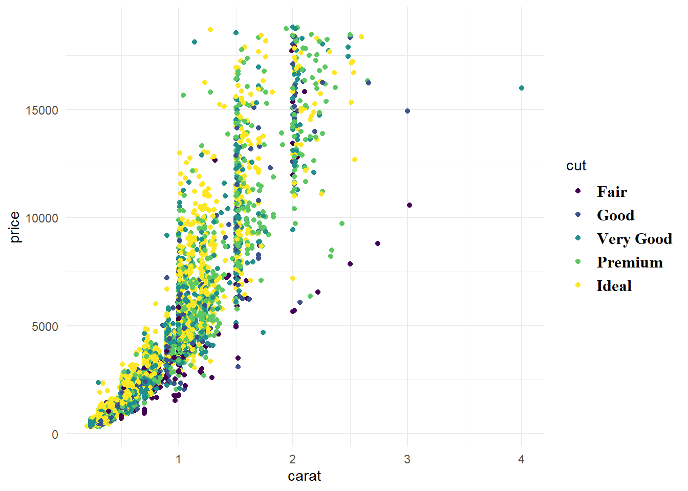
Tùy chỉnh khung màu trong biểu đồ
Các màu mặc định của GGPLOT2 đáp ứng phần lớn các yêu cầu trong phân tích và báo cáo. Tuy nhiên, khi cần tùy chỉnh màu sắc mặc định này lại có thể rất khó khăn nếu ta không biết cách làm. Trong thực tế, các biểu đồ của các công ty lớn, hoặc các báo cáo phân tích đều phải tuân theo chuẩn màu sắc của cả công ty. Do đó, ta cần phải nắm được cách tùy chỉnh màu sắc của biểu đồ trong R.
Một số mã màu sắc của R có thể tham khảo tại link
Màu của biến rời rạc
- Trường hợp 1: Tự điền mã màu
p +
scale_color_manual(values = c("darkred", "darkblue", "violet", "darkgreen", "orange"))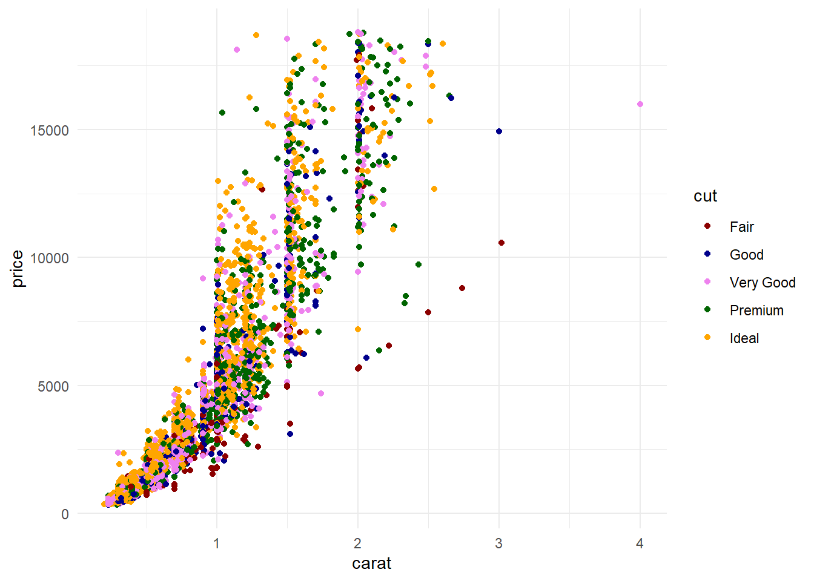
- Trường hợp 2: Thay đổi màu sắc theo 1 số chế độ mặc đinh
#Sử dụng Brewer
p +
scale_colour_brewer(palette = "Set1")#Sử dụng bảng màu của Tableau
library(ggthemes)
p +
scale_colour_tableau() +
theme_tufte()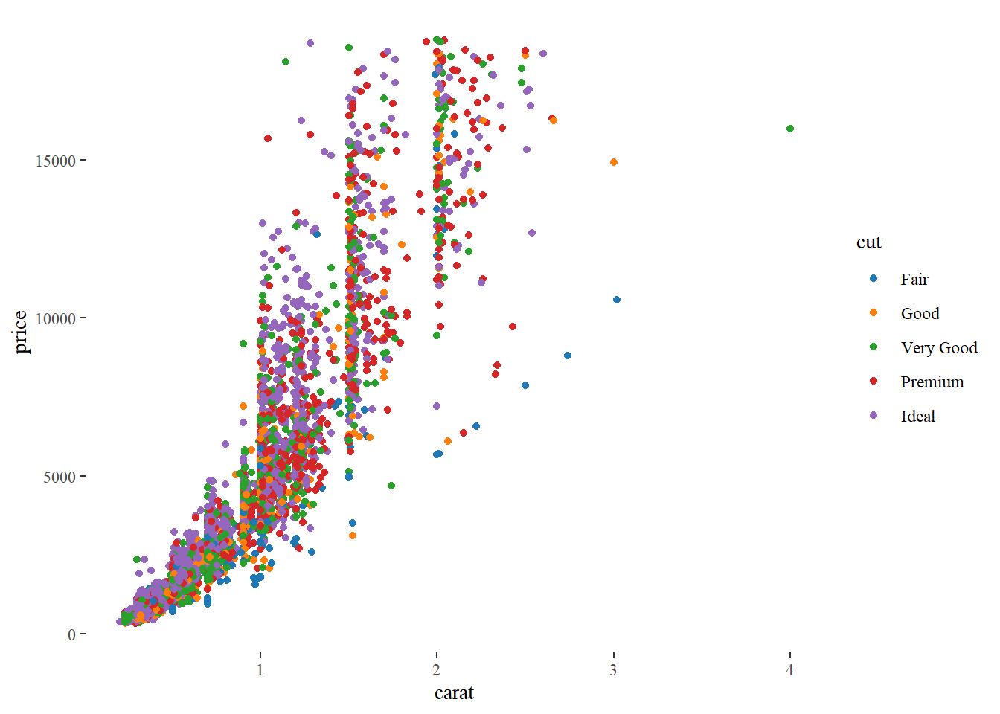
Màu của biến liên tục
Màu trên GGPLOT2 có thể thay đổi với dài màu liên tục. Xem ví dụ sau.
# Tạo biểu đồ gốc
p <- ggplot(data, aes(x = carat, y = price)) +
geom_point(aes(col=price))
p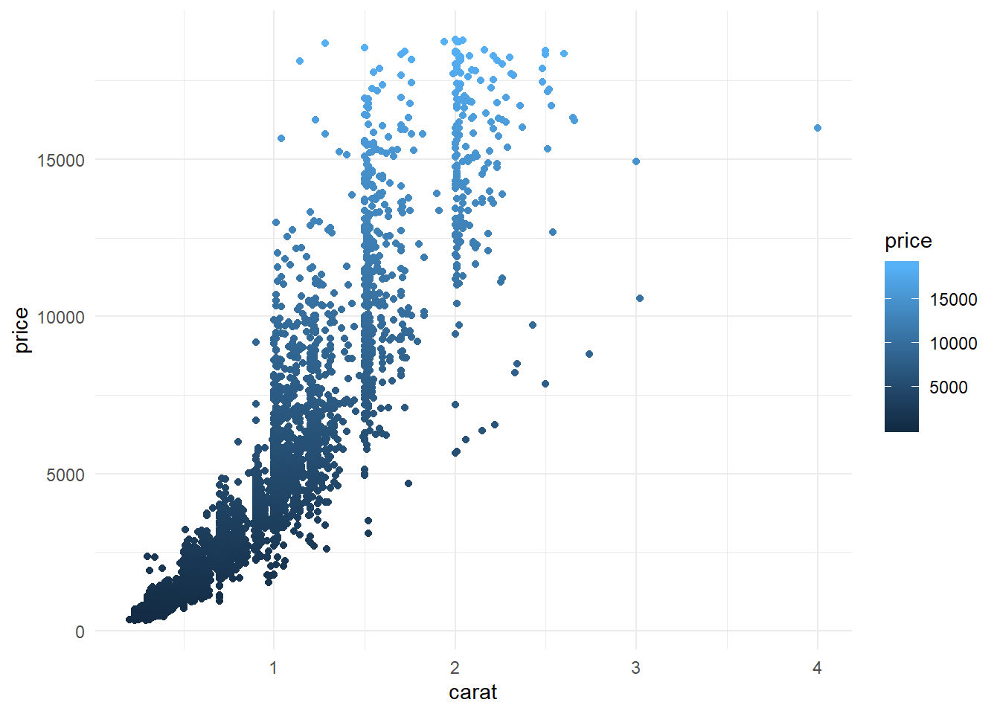
- Tạo màu theo biến liên tục với
scale_color_gradient
p + scale_color_gradient(low = "darkblue", high = "darkred")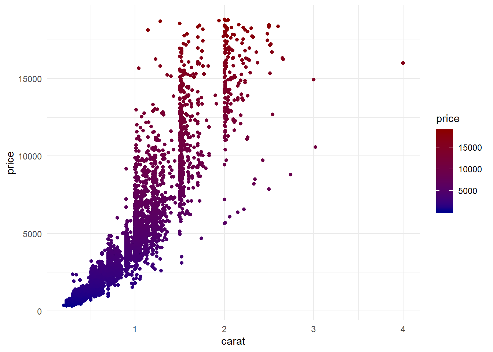
- Tạo màu theo biến liên tục với
scale_color_gradient2
p + scale_color_gradient2(midpoint = mean(data$price),
low = "blue4",
mid = "white",
high = "red4")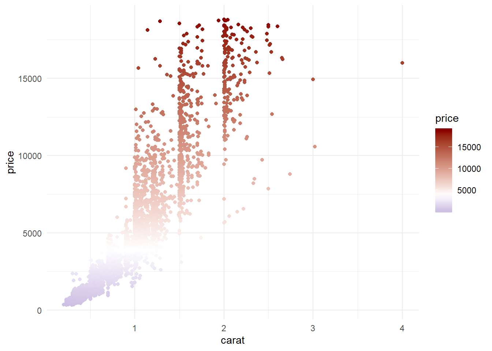
Như vậy, chúng ta đã vừa biết xong những cách thay đổi các thuộc tính cơ bản nhất của biểu đồ với ggplot2. Chúc các bạn học và làm việc hiệu quả với Ranalytics.vn!